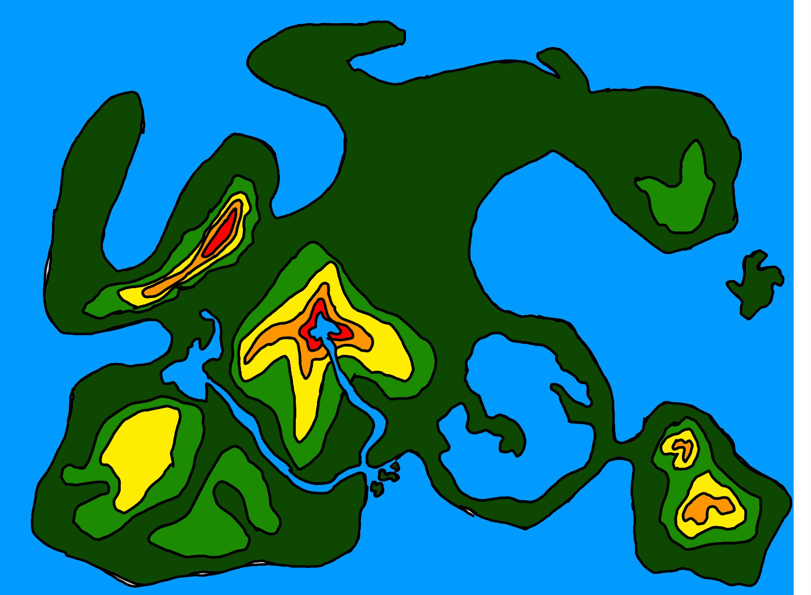
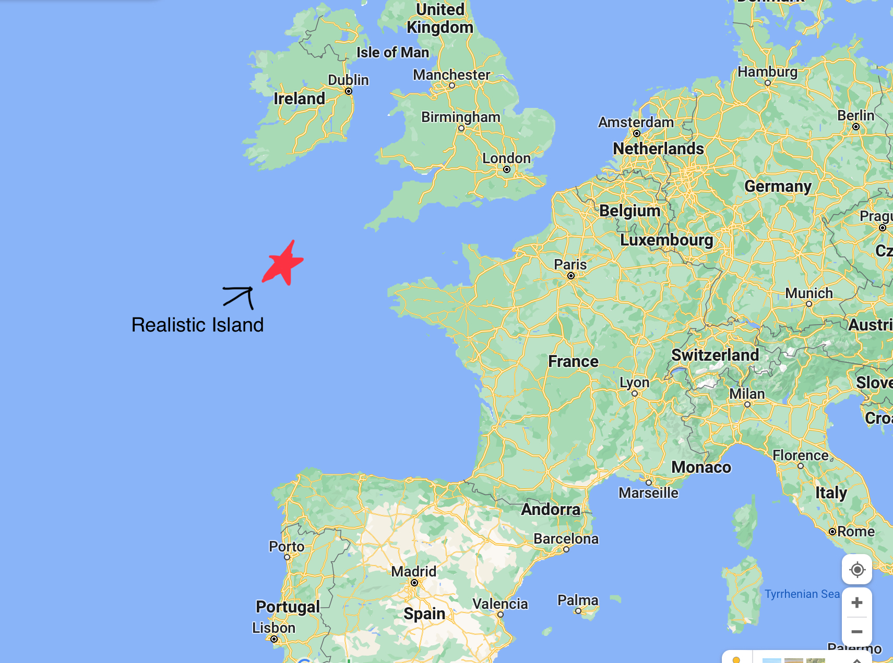

Why You Should Visit Us

There are many things to do on Realistic Island.
You can visit during Springtide to celebrate the union of cultures that created the island today.
In the festival often friends and family spend time cooking and enjoying each others company.
You can climb Lance Peak to uncover what happened to the ruined society that once stood there.
Before the Norweigens came to the island that civilization once rested on there, but now it is nothing but ruins.
So come, enjoy the many experiences that Realistic Island has to offer.
 Realistic Island is located just off of the English Channel in the Celtic Sea.